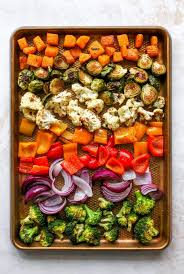
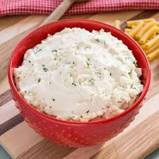
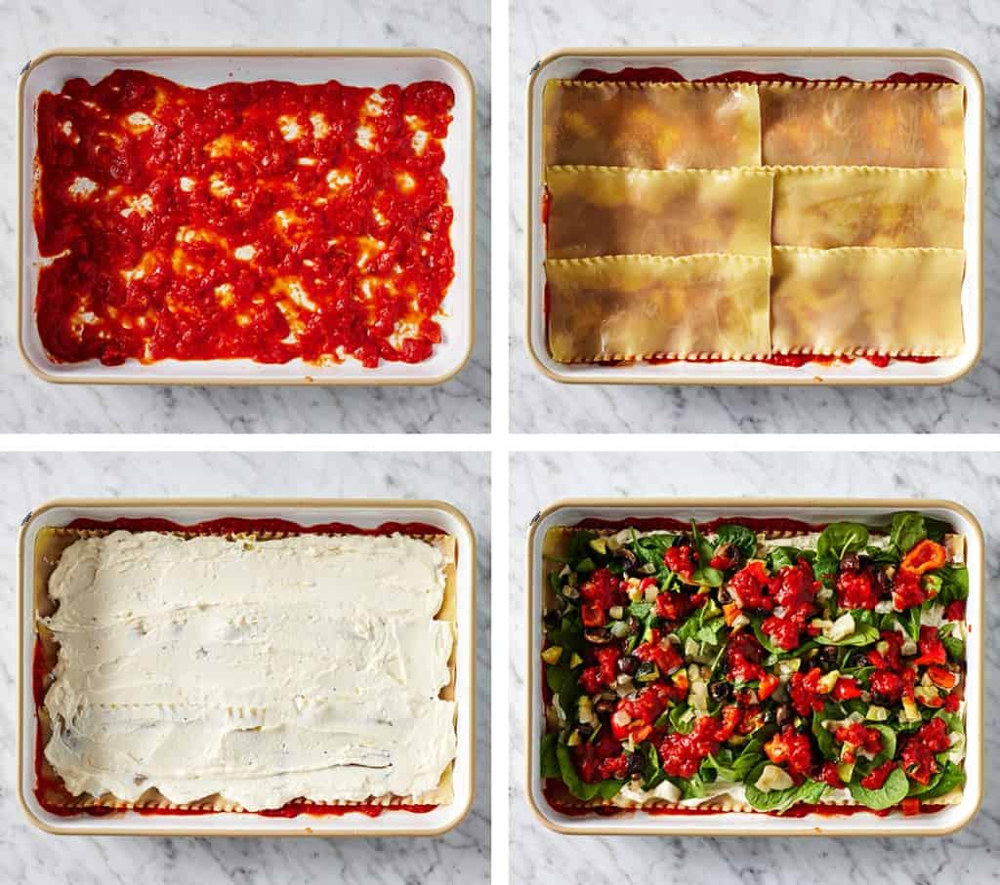
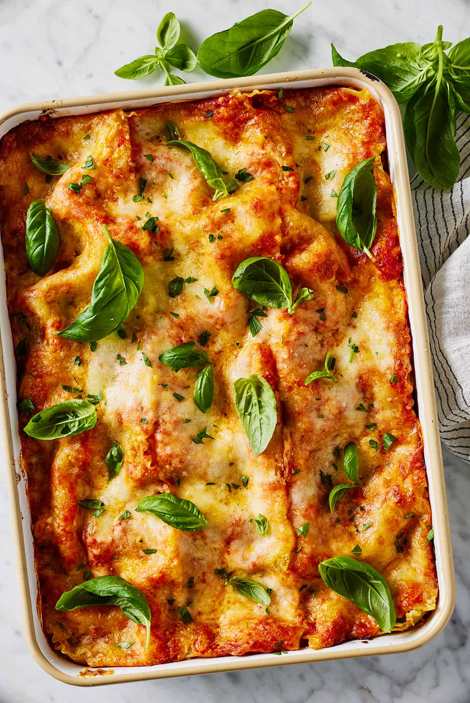
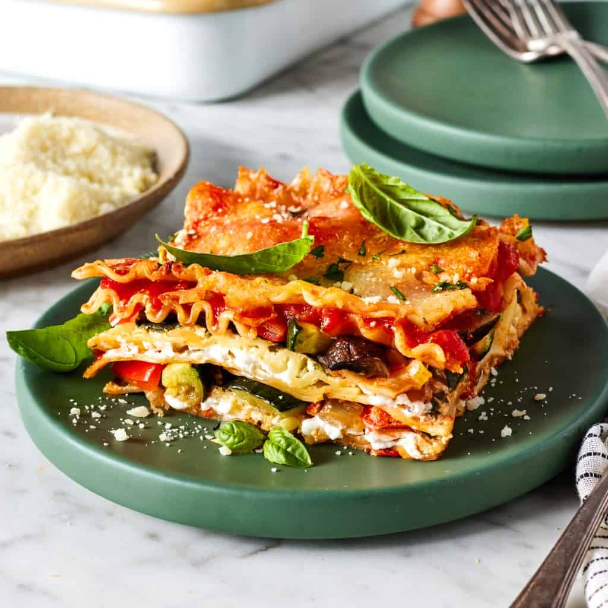

How the story starts...

Vegetarian lasagna was the first big dinner I learned how to make. When I was in college, a vegetable lasagna would always be the main event when I cooked a meal for a group. Fast forward to now, and I still like to make one when I’m serving a crowd, especially around the holidays. A veggie lasagna is comforting, flavorful, and great for making ahead. Plus, who doesn’t love to swap stories at the table over red sauce and pasta?!
I’m sharing my favorite vegetarian lasagna recipe below. It’s savory and satisfying, filled with roasted veggies, creamy ricotta cheese, ruffly noodles, and plenty of marinara sauce. I think you’re going to love it!
How to Make Vegetable Lasagna
My vegetarian lasagna recipe starts with these ingredients:
Vegetarian Lasagna Ingredients
- Fresh veggies
- Lasagna noodles
- Marinara sauce
- Ricotta cheese
- Garlic and lemon zest
- Shredded pecorino and mozzarella cheese
- Fresh basil and/or parsley
Fresh veggies, of course! I pack this vegetable lasagna with roasted red bell peppers, zucchini, onions, mushrooms, and baby spinach. They add SO much flavor
Lasagna noodles – No-boil noodles seem convenient—but trust me, the regular kind are better. They take less than 10 minutes to cook, and they have a perfect tender texture in the final lasagna.
Marinara sauce – Make homemade marinara sauce, or use a 24-ounce jar of store-bought sauce. I like Rao's
Ricotta cheese – It creates a creamy, cheesy layer between the noodles, sauce, and veggies. I season it with garlic and lemon zest for bright, savory flavor.
Shredded pecorino and mozzarella cheese – For topping the lasagna. Not a pecorino person? Parmesan cheese works too!
And basil and/or parsley – For garnish.
Find the complete recipe with measurements below
Before you assemble the lasagna, complete these 3 prep steps:
-
Roast the veggies. Toss the peppers, zucchini, onions, and mushrooms with olive oil, salt, and pepper. Bake at 425°F until they’re tender and caramelized.

-
Boil the noodles until al dente. Toss them with a drizzle of olive oil to prevent sticking!

-
Make the ricotta filling. Mix the ricotta cheese with the lemon zest, garlic, salt, and pepper.

How to Layer Vegetable Lasagna

Start with a 9×13-inch baking dish. Spread 1 cup of the tomato sauce on the bottom.
- Then, add a layer of noodles.
- Top the noodles with half the ricotta mixture.
- Layer half the spinach over the ricotta, and scatter half the roasted vegetables in an even layer.
- Dot the vegetables with 2/3 cup of the marinara sauce.
Repeat the layering process in the same order:
- Noodles
- Ricotta
- Spinach + roasted veggies
- 2/3 cup marinara sauce
Top with a final layer of noodles, the remaining sauce, and the shredded cheese.
That’s it!
How Long to Bake Vegetarian Lasagna
If using fully cooked lasagna noodles: Bake uncovered at 400°F for 30 minutes, or until the cheese is browned and bubbling.
If using no-boil lasagna noodles: Cover the veggie lasagna with aluminum foil. Bake at 400°F for 40 to 50 minutes, or until the noodles are tender. Remove the foil and bake until the cheese is browned and bubbling.
Let the vegetable lasagna stand at room temperature for 20 minutes before slicing and serving.

Now you are ready to enjoy!
